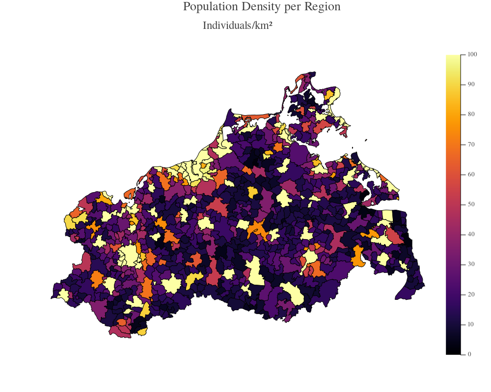

3 - Plotting
GEMS offers a large variety of plotting options, mainly built upon the Plots.jl package.
Plotting Results
The powerful gemsplot() function is the central element of GEMS' output visualization options. It requires a ResultData object that was generated from a finished simulation and can be parameterized in many ways. By passing the type argument, you can select from a large range of graphs. Run plottypes() to see the list of available types.
using GEMS
sim = Simulation()
run!(sim)
rd = ResultData(sim)
gemsplot(rd, type = :CumulativeCases)Plot
Put a ? into the Julia REPL and call help?> gemsplot to get an overview of graphs you can generate using the gemsplot function or look up the Plotting section of the API documentation.
Additonally, it is possible to pass multiple types as a tuple to make them appear in the same plot:
gemsplot(rd, type = (:CumulativeCases, :EffectiveReproduction))Plot
Finally, you can customize your plot with the keyword arguments that are available to the Plots.jl package. In this example, we want to see the cumulative infections for the first 100 days and remove the legend:
gemsplot(rd, type = :CumulativeCases, xlims = (0, 100), legend = false)Plot
Custom Plots
If there is a plot that is not readily available via gemsplot(), it's always possible to create your own plot (using the Plots.jl package), e.g., to visualize properties of the Simulation object, rather than the ResultData object. This example plots a histogram of the total age distribution:
using GEMS, Plots
sim = Simulation()
inds = individuals(sim)
ages = age.(inds)
histogram(ages, xlabel = "Age", ylabel = "Number of Individuals", label = "Individuals per Age")Plot
Plotting Maps
If you are working with a geo-referential model (e.g., by loading one of the inbuilt models of a German federal state), you can plot geographical maps of your simulation using the gemsmap() function. The type keyword provides various data options (and needs to be passed as there is no default). Run maptypes() to see the list of available types.
If you try to plot any gemsmap for the first time, it will trigger the download of a required shapefile.
using GEMS
sim = Simulation(population = "MV")
gemsmap(sim, type = :PopDensityMap, clims = (0, 100))Plot

Put a ? into the Julia REPL and call help?> gemsmap to get an overview of maps you can generate using the gemsmap() function or look up the Mapping section of the API documentation.
Many maps are available on varying geographical resolutions (state (1)-, county (2)-, or municipality (3)-level). You can pass the level argument to trigger the aggregation for many maps. Here's an example to get the average age of people per county:
gemsmap(sim, type = :AgeMap, level = 2)Plot
Custom Maps
You can also generate custom maps by passing a dataframe to the agsmap() function. This dataframe requires two columns with the first column being a (unique) vector of community identification numbers (AGS) and the second column being a vector of numerical values. The code below loads the inbuilt model of Mecklenburg-Vorpommern (MV) and extracts all households from the model. It then creates a dataframe that stores the households' AGS and size attributes. As the dataframe requires a unique vector of community identification numbers, we group the dataframe by the ags column and calculate the mean for each group. Lastly, the map is being printed:
using GEMS, DataFrames, Statistics
sim = Simulation(population = "MV")
hhlds = households(sim)
# prepare dataframe
df = DataFrame(ags = ags.(hhlds), size = size.(hhlds))
grouped_df = groupby(df, :ags)
combined_df = combine(grouped_df, :size => mean => :avg_size)
# print map
agsmap(combined_df)Plot
The agsmap function infers the geographical level (municipality, county or state) from the input data. If you want to show a map on any higher-order geographical resolution, you need to transform the input data slightly:
using GEMS, DataFrames, Statistics
sim = Simulation(population = "MV")
hhlds = households(sim)
df = DataFrame(ags = ags.(hhlds), size = size.(hhlds))
df.ags = county.(df.ags) # get the "county part" of the community number (AGS)
grouped_df = groupby(df, :ags)
combined_df = combine(grouped_df, :size => mean => :avg_size)
# print map
agsmap(combined_df)Plot
Combining Plots
Both gemsplots and gemsmaps are compatible with any plot from the Plots.jl package and can therefore be combined in subplots. Here's an example where we want to combine the age-histogram, the cumulative infections curve, and the population density map and the in the same plot:
using GEMS, Plots
sim = Simulation(population = "MV")
inds = individuals(sim)
ages = age.(inds)
run!(sim)
rd = ResultData(sim)
# pass as many plots to the "plot" functions as you want
plot(
histogram(ages, xlabel = "Age", ylabel = "Number of Individuals", label = "Individuals per Age"),
gemsmap(sim, type = :PopDensityMap, clims = (0, 100)),
gemsplot(rd, type = :CumulativeCases, xlims = (0, 100)),
layout = (3, 1),
size = (400, 1000)
)Plot
Saving Plots
Use the Plots.jl package's png() function to save plots and maps to your harddrive:
using GEMS, Plots
sim = Simulation()
run!(sim)
rd = ResultData(sim)
gp = gemsplot(rd, type = :CumulativeCases)
png(gp, "cumulative_cases.png") # specify a path and filenameCustom Plot Types
In the previous chapters you have seen, that you can pass a variety of types to the gemsplot() function. GEMS allows you to also define your own plot types that can then be used by the gemsplot() function.
As shown in the code below, you need to import the GEMS.generate function. Then, define a new keyworded struct of the name of your new type with three fields (title, description, and filename). Make it inherit from GEMS.SimulationPlot. Define a generate() function for your new plot type. The generate() function actually generates the plot object from the ResultData object that was passed. In the example below, we want to have a simple time-series of total infections over time. Make sure that the generate() function actually returns a plot object. You can call plottypes() to verify that your new plot has been added. Now you can use :TotalInfections as a new type of a gemsplot.
using GEMS, Parameters, DataFrames, Plots
import GEMS.generate
# This struct needs to be defined with the @with_kw macro
# and have default values for "title", "description", and "filename"
@with_kw mutable struct TotalInfections <: GEMS.SimulationPlot
title::String = "Total Infections"
description::String = "This plot shows the total number of infections
throughout the span of the simulation."
filename::String = "total_infections.png"
end
# this function needs to take the new plot type, a ResultData object and optional plotargs...
function GEMS.generate(plt::TotalInfections, rd::ResultData; plotargs...)
csum = rd |> tick_cases |>
x -> transform(x, :exposed_cnt => cumsum => :exposed_cumsum)
plot_cumsum = plot(xlabel="Ticks", ylabel="Total Infections")
plot!(plot_cumsum, csum[!,"exposed_cumsum"], label="Infections")
plot!(plot_cumsum; plotargs...) # optional, but let's the user pass custom arguments such as "xlims", etc...
return(plot_cumsum)
end
# TESTING
sim = Simulation()
run!(sim)
rd = ResultData(sim)
gp = gemsplot(rd, type = :TotalInfections)Plot
You might have seen that the gemsplot() function can also work with multiple ResultData objects. If you want multiple simulation runs in one custom plot, you need to define a generate-function with this signature: generate(plt::YourNewType, rd::Vector{ResultData}; plotargs...). This function can exsist additionally to the single-ResultData implementation. It does not have to replace it. If no multi-ResultData generate-function is available for a particular type, calling gemsplot() with this type and multiple ResultData objects will cause the function to return a multi-plot with one subplot for each ResultData object.